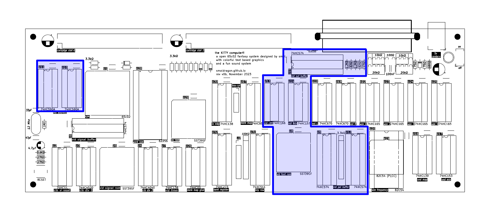
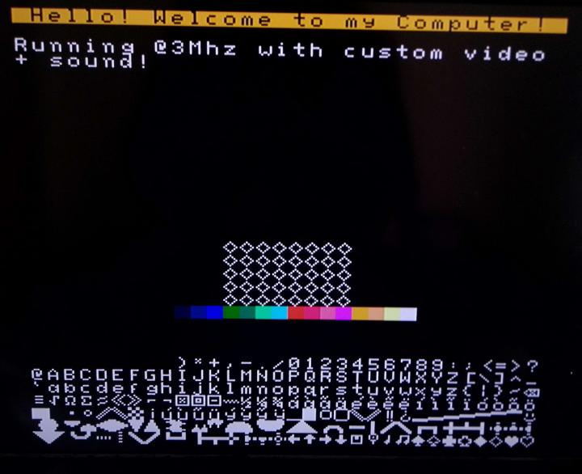
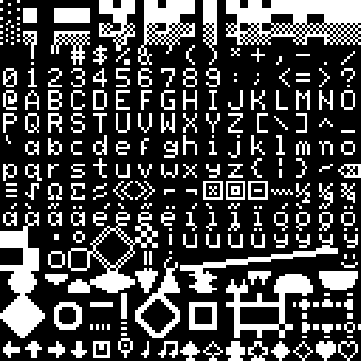
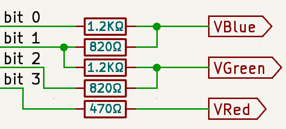

Video System


The KITTY's video output is a text based display containing 32 by 32 tiles of 8 by 8 pixels. Each tile can be set to one of 256 different characters from a fixed font, with foreground and background colors chosen from a palette of 16.
The data for the display is located directly in system ram:
| Address | Description | Format |
|---|---|---|
$6800-$6BFF |
Display Color | %ffff_bbbb foreground and background |
$6C00-$6FFF |
Display Characters | 0-255 extended ascii character |
Palette
An approximation of the KITTY's color palette:
Font
The font is a variation of ascii:

Details
The color palette is generated from the following resistor DAC:
